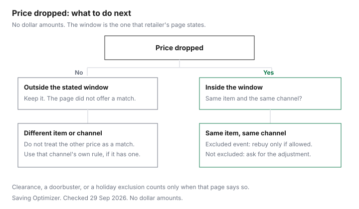

Clothing · Canada
Price Adjustments on Clothing in Canada: How to Get Money Back When It Goes on Sale
To get money back when clothing goes on sale in Canada, ask the same store for a price adjustment within its window. Costco’s is 30 days, while Old Navy and Gap Canada say they do not adjust previous purchases. Clothing markdowns move faster than a fridge promotion. A jacket at full price on Thursday can be a “weekend deal” on Saturday, and the receipt does not update itself. A price adjustment is the store giving back the difference while you keep the item. A price match is a different promise: the store meets another seller’s price, usually before or as you buy. This page is the clothing companion to the household price-adjustment guide. It stays on clothing banners and on Costco’s published rule, which covers clothing when the item is in the warehouse or on Costco.ca. Education only. A portal link, if one is added later, does not change a store’s day count.
Disclosure: Cash-back portal offers are an offer type. Saving Optimizer may earn a commission if a partner link is added later. No portal partnership is claimed. A portal does not change a retailer’s price-adjustment window. Education only.
Key takeaways
- Adjustment means “same store, lower price later, you keep the item.” Match means “another seller’s price,” and clothing pages often refuse it. Costco.ca does not match the warehouse, and the warehouse does not match Costco.ca or other retailers.
- Costco’s window is 30 days. Warehouse: membership counter, item in stock, not demonstration stock, still inside the promotional dates. Answer published 10 September 2025. Costco.ca: the order must have been placed within 30 days before the lower online price. Same publish date. Checked 29 Sep 2026.
- The Old Navy and Gap Canada shipping-offer page says no adjustments on previous purchases. That is the sentence on that page. It is not a 14-day policy, because no 14-day clothing window was on the page checked.
- Black Friday, Friday 27 November 2026, and Boxing Day, Saturday 26 December 2026, are calendar dates. Whether those prices qualify is in the promotion’s terms. Costco says some of its own promotions may not be adjustable.
- Return-and-rebuy is allowed only when the return policy still refunds the original tender and the new price is a new purchase. A return fee or store credit can erase the gap. The return-policy guide is the other half of the decision.
Price adjustment vs price match
Say the two requests out loud before you queue. “This same jacket, bought here, is now cheaper here” is an adjustment.
“The store across the mall has it for less” is a match. Clothing banners often publish one, neither, or a match that excludes clothing. The household price-match guide covers Canadian Tire, Home Depot and the end of Walmart’s competitor ad match. Do not paste those distances and day counts onto a dress.
Costco’s Costco.ca answer is explicit about the boundary. It does not price match the warehouse or the other way around, and it does not match other retailers. The credit is the gap between what you paid on Costco.ca and the current lower price on Costco.ca. Resellers are told to buy during the promotional dates. Gold and silver bullion, all gift cards, and live-event tickets are not eligible. Offers cannot be combined with other promotions. The warehouse answer sends online purchases back to that Costco.ca page, and it sends you to the membership counter only for an in-warehouse purchase.
The Old Navy and Gap Canada everyday-shipping page, checked 29 Sep 2026, ends its offer terms with “No adjustments on previous purchases.” The page is a shipping offer: free shipping at $50 of merchandise, $8 below that, gift cards excluded from the $50. It is fair to quote that sentence. It does not describe a separate 14-day adjustment window. If a later Old Navy page states a window, that page wins. Until then, the chart says check the retailer’s page.
Typical clothing windows (verify each retailer)
“Typical” is a trap in clothing. A 14-day rumour and a 30-day warehouse rule are not a category average. The table keeps a number only when the retailer’s page states it. Everyone else is a blank you fill at the counter.
| Retailer | Window | Online and in-store | Exclusions named on the page | Return-and-rebuy |
|---|---|---|---|---|
| Costco warehouse | 30 days from purchase | In-warehouse only. Online purchases use the Costco.ca answer. The channels do not match each other. | Item must be in stock. Demonstration merchandise is excluded. The price must still be inside the promotional dates. Answer published 10 Sep 2025. | Not described on the price-adjustment answer. Use the adjustment at the membership counter when you are inside the window. |
| Costco.ca | Order placed within 30 days before the lower Costco.ca price | Costco.ca to Costco.ca. Not the warehouse. Not other retailers. | Gift cards, live-event tickets, gold and silver bullion. Some promotions, including Spend and Get and Buy More and Save More, may not qualify. See the promotion. Credit after the order ships, typically 5 to 7 business days, to the original payment. Answer published 10 Sep 2025. | Not described. The published path is the online form. |
| Old Navy / Gap Canada | Check the retailer’s page. The shipping-offer page says no adjustments on previous purchases. | Check the retailer’s page | That offer excludes gift cards from the free-shipping threshold and bars adjustments on previous purchases. | Check the retailer’s page. Final sale items on that page cannot be returned or exchanged. |
| Mark’s, Sport Chek, Simons | Check the retailer’s page | Check the retailer’s page | Check the retailer’s page | Check the retailer’s page |
| lululemon Canada, H&M Canada | Check the retailer’s page. The return pages checked do not state an adjustment window. | Check the retailer’s page | lululemon: We Made Too Much is final sale unless you are a member. H&M: no returns after 30 days. | Only if the return policy still allows a refund. H&M’s warehouse return is $3.99. In store it is free. |
Bring the proof the page names. For Costco warehouse, that is a trip to the membership counter of your warehouse, with the item still in stock. For Costco.ca, it is the form, and the credit waits until the order has shipped. Screenshot the lower price with the date in the frame. The price-tracking guide is the habit that makes the screenshot exist before the window closes.
Black Friday and holiday exclusions
A doorbuster is often the price. The adjustment, if it exists, is a second decision the event can switch off. Costco says restrictions will be shown at the point of purchase, and that it may tighten the policy later. Read the placard on the clothing pallet and the lines under a Costco.ca promotion before you treat a Friday price as adjustable on Monday.
Nothing checked on 29 Sep 2026 said “all Black Friday clothing is excluded” or “all Boxing Day clothing is final sale.” The Black Friday versus Boxing Day guide keeps those days as a calendar: 27 November and 26 December 2026. The holiday return guide is the place for gift receipts and final-sale tags. Use both, and still read the ticket in your hand. A clearance price that is already the adjustment is not a second dip. If the compare-at price looks invented, the test is the Competition Bureau’s ordinary-price guidance, linked from the tracking guide, not a feeling that the sign is loud.
Return-and-rebuy: when it's allowed
Return-and-rebuy is a workaround when the adjustment desk says no and the return desk still says yes. Run it on paper first.
You need the refund to land on the original tender, or you need to be willing to hold store credit. You need the same item, in a size you still want, to be on the floor at the lower price after you return the first one. You need any return fee to be smaller than the price gap. H&M’s $3.99 warehouse fee is a real fee on that page. Example with made-up inputs: a $3 gap does not survive it. An in-store H&M return, which that page prices at zero, might.
Final sale ends the workaround. lululemon’s non-member rule on We Made Too Much ends it. The Old Navy and Gap Canada offer page ends it for final sale items. Ontario does not require the store to offer the workaround. The Consumer Protection Act, on the provincial page updated 25 September 2024, does not create a general right to return goods. If the return is allowed, the rebuy is just a new sale. If a portal paid cash back on the first order, expect the return to reverse it. Screenshot the portal terms before you ship the parcel back.
Tracking alerts
The window is short, so the alert has to be shorter. The same day you buy, put the order number, the price, the channel and the last day to ask on one line. For a Costco.ca clothing order the last day is 30 days after you placed it, and you are watching Costco.ca, not the warehouse tag. For a warehouse item you are watching that building’s price, in stock, inside the promotion.
Retailer wish lists and back-in-stock notes are useful when the page offers them. A browser extension is an offer type, not a ruling on whether the sale is real. The best-time-to-buy guide is the seasonal map. It does not replace the 30-day clock on a receipt you already hold. Set the reminder for a few days before the window ends, not on the morning it ends, because a membership counter and a shipped-order rule both take time.

Sources & date stamps
- Costco.ca, “What is the price adjustment policy for warehouse items?”, version 3.0, published 10 September 2025, checked 29 Sep 2026. 30 days, in stock, demonstration merchandise excluded, promotional dates, membership counter.
- Costco.ca, “Price Adjustment - Costco.ca Orders”, version 5.0, published 10 September 2025, checked 29 Sep 2026. 30 days, no cross-channel match, gift cards excluded, promotion limits, credit in 5 to 7 business days after shipment.
- Old Navy / Gap Canada everyday free-shipping offer, oldnavy.gapcanada.ca, checked 29 Sep 2026. “No adjustments on previous purchases.” Final sale cannot be returned or exchanged.
- H&M Canada returns, www2.hm.com/en_ca, checked 29 Sep 2026. $3.99 to the online warehouse, in-store returns free, 30 days after receipt. No adjustment window on that page.
- lululemon Canada return policy, shop.lululemon.com/en-ca, checked 29 Sep 2026. 30-day returns. We Made Too Much final sale unless you are a member. No adjustment window on that page.
- Ontario, Returns, exchanges and warranties, updated 25 September 2024, checked 29 Sep 2026. No general right to return or exchange.
Frequently asked questions
Do Canadian clothing stores give price adjustments?
Some do, and the rule is the retailer’s page, not a national clothing right. Costco’s warehouse answer, published 10 September 2025, honours an in-warehouse request within 30 days if the item is in stock, excluding demonstration merchandise, and still inside the promotional dates. Costco.ca credits the difference when the online purchase was placed within 30 days before the lower Costco.ca price. The Old Navy and Gap Canada shipping-offer page says no adjustments on previous purchases for that offer. lululemon and H&M did not print a clothing price-adjustment window on the pages checked 29 September 2026. Check the retailer’s page.
How many days do I have to ask?
Count from the date that retailer’s page uses, and do not borrow another store’s number. Costco’s published window is 30 days, warehouse and Costco.ca separately. The household price-adjustment guide records other banners, including Best Buy, on the dates stamped there. Mark’s, Sport Chek and Simons are not given a day count here. Check the retailer’s page. If the page is silent, there is no window to quote.
Does a Black Friday or Boxing Day price count?
Only if that retailer’s price-adjustment page, or the event’s own terms, says the lower price qualifies. Costco says adjustments for some Costco.ca promotions, including Spend and Get and Buy More and Save More, may not be available, and it tells you to read the promotion. It does not, on the answer checked 29 September 2026, name Black Friday or Boxing Day. Black Friday 2026 is Friday 27 November and Boxing Day is Saturday 26 December. Those dates do not themselves create or cancel an adjustment. The clothing sale-timing guide is the calendar. The receipt is the rule.
Can I return and rebuy instead?
Sometimes, and only inside the return policy, which is a different document from a price adjustment. If the item is still returnable to the original tender, you can return it and buy it again at the lower price. That is two transactions. Final sale, a short window, a return fee, or a refund that arrives as store credit can make the second purchase a loss. H&M Canada charges $3.99 to send a return to the online warehouse and nothing for an in-store return, on the page checked 29 September 2026. Costco’s price-adjustment answers do not describe return-and-rebuy. Use the adjustment path they do describe when you are inside 30 days.
Do cash-back portals or gift cards change the adjustment?
They can change the cash you already received, and they do not rewrite the store’s window. A portal tracks a purchase. If you return the item, the portal terms may claw the cash back. Read those terms. This page does not quote a live portal rate. Costco’s Costco.ca answer says all gift cards are not eligible for price adjustments or promotions, and the credit goes to the original payment method after the order has shipped, typically in five to seven business days. A discounted gift card is an offer type. It is not a second adjustment.
Researched and drafted with AI assistance and fact-checked against official Canadian sources. How we create content.